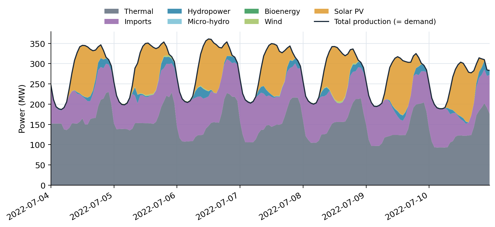
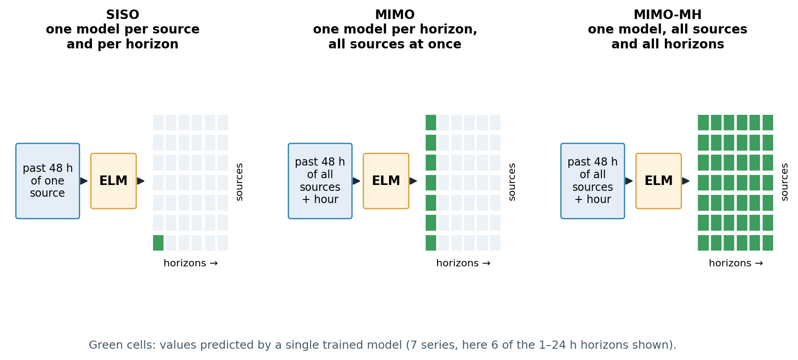

Solar forecasting explained · 22 October 2026 · Published article (MIMO) and manuscript, submission in progress (MIMO-MH, multi-horizon) · open code and data
MIMO-ELM: forecasting every source of an island electricity grid at once
In brief
- One extreme learning machine (ELM: a neural network with one hidden layer whose random weights stay fixed, only the output weights being fitted; it is a MIMO model, multiple inputs and multiple outputs) forecasts the seven signals of the Corsican electricity grid at once (total, thermal, imports, hydropower, solar, wind, bioenergy) from the last 48 hours.
- One hour ahead, the published study reports a normalized RMSE (nRMSE: root mean square error made relative, no unit) of 0.179 for solar and 0.051 for thermal, with a coefficient of determination R² (no unit, 1 = perfect fit) above 0.98, ahead of persistence (repeat the last value) and of an LSTM (long short-term memory network) tuned with a realistic budget.
- Published in Applied Energy 410, 127599 (2026) by C. Voyant, M. Despotovic, L. Garcia-Gutierrez, M. Asloune, Y.-M. Saint-Drenan, J.-L. Duchaud, G. A. Faggianelli and E. Magliaro; MATLAB and Python code with EDF open data, doi:10.5281/zenodo.23562559.
- Understand first: seven Corsican energy signals, one model (the story of the article), MIMO, ELM and nRMSE in the glossary.
On an island grid, production must match consumption at every moment. The operator needs forecasts of every source and of the total, and they must add up. One model that predicts all of them together can be more coherent, and with an extreme learning machine it trains in seconds.
The question
Corsica's electricity comes from thermal plants, imports through the interconnections, hydropower, solar, wind and bioenergy. The sources are not independent: when solar rises at noon, thermal and imports adjust. Forecasting each source separately ignores these links and gives forecasts whose sum need not equal the forecast total.

Three ways to organize the models
- SISO (single input, single output): one model per source and per horizon, each reading only the history of its own source.
- MIMO (multiple inputs, multiple outputs; the published article): one model per horizon reads the last 48 hours of all sources, plus the hour of the day, and predicts all of them at once.
- MIMO-MH (MH = multi-horizon; the manuscript in submission): a single model predicts all sources for all horizons from 1 to 24 hours, followed by a reconciliation step that makes the forecasts add up.

The theory
Why, in the words of the article: on an island grid the energy sources balance one another (when one varies, the others adjust), so predicting each source and their sum with the same algorithm lets these balancing effects enter the learning, potentially giving a better forecast of the residual demand than one model per source. Six years of hourly data from Corsica (solar, wind, hydropower, thermal, bioenergy and imports, plus the total) are forecast with an extreme learning machine in a multi-input multi-output (MIMO) architecture. Equation numbers are those of the article (arXiv:2508.12764).
Why several outputs: the mutual information MI (Eqs. 1 and 2)
$$\mathrm{MI}(X;Y)=\iint p(x,y)\log\frac{p(x,y)}{p(x)\,p(y)}\,dx\,dy\ \ (1),$$ $$\mathrm{MI}_{\mathrm{norm}}(X;Y)=\frac{\mathrm{MI}(X;Y)}{\sqrt{H(X)\,H(Y)}}\in[0,1]\ \ (2).$$Here \(p\) denotes probability densities and \(H\) entropy. Unlike the Pearson correlation, the normalized mutual information captures non-linear dependencies. Thermal and bioenergy (0.535), solar and bioenergy (0.468), hydropower and thermal (0.373) are strongly linked; the total depends mainly on thermal (0.256), imports (0.231), hydropower (0.129) and solar (0.124). These links support a MIMO approach.
Inputs and outputs
- Sliding window
- the last \(w\) hours of all seven signals; \(w\) chosen by exhaustive search from 24 to 96 hours with 212 hidden nodes: \(w=48\) is best
- Time encoding
- \(\sin(2\pi t/24)\) and \(\cos(2\pi t/24)\), with \(t\) the hour of the day
- Inputs, outputs
- \(7\times48+2\) inputs; 7 outputs, the seven signals at the forecast horizon
- Reference
- persistence, \(\hat y_{t+h}=y_t\)
The extreme learning machine of the article
For an input vector \(\mathbf x\), hidden neuron \(j\) computes a ReLU (rectified linear unit, \(\max(0,\cdot)\)) of a random projection, and the output is linear in the hidden layer:
$$h_j(\mathbf x)=\max\!\big(0,\ \mathbf w_j^{\top}\mathbf x+b_j\big),$$ $$\mathbf y=H^{\top}W,$$ $$W=H^{+}Y,$$with \(H\) the hidden-layer outputs, \(Y\) the targets, \(W\) the output weights and \(H^{+}\) the Moore–Penrose pseudo-inverse: the input weights and biases are drawn at random and never trained, and the output weights minimize the mean squared error over all outputs in one closed-form step. Fifty random initializations are drawn and the best one, by in-sample RMSE, is kept. With 4,096 hidden neurons the model has 1,413,120 parameters and trains in 104.1 s per initialization on a laptop; the LSTM of the comparison (500 hidden neurons, 1,023,507 parameters) needs 2,651.6 s, about 25 times longer, and an LSTM with 4,096 neurons was infeasible on the same machine. Being closed-form, the ELM can be retrained continuously on a sliding window (online learning).
What the article shows
The ELM significantly outperforms persistence, particularly for solar and thermal production: nRMSE 17.9 % and 5.1 % with R² > 0.98 one hour ahead. Accuracy stays high up to five hours ahead, beyond which renewable sources become increasingly volatile. MIMO gives marginal gains over single-output (SISO) models and, against the LSTM, a closed-form solution at a much lower computational cost, suited to real-time use.
Beyond the article: forecasts that add up (MIMO-MH, manuscript in submission)
The article mentions reconciliation as another strategy for linked quantities. The repository adds, for the multi-horizon extension under submission, a weighted least-squares reconciliation that makes the forecast total equal the sum of the sources: with the summing matrix \(S\) and the error variances \(W\),
$$\tilde{\mathbf y}=S\left(S^{\top}W^{-1}S\right)^{-1}S^{\top}W^{-1}\hat{\mathbf y}.$$No result of that manuscript is reported here.
Worked example: making forecasts add up
For one hour, suppose the forecasts are 330 MW (megawatts) for the total, 150 for thermal, 90 for imports and 80 for solar, with error variances 36, 25, 49 and 100 MW². The components sum to 320, not 330. Weighted least-squares reconciliation finds the coherent forecasts closest to the original ones, trusting the more reliable forecasts more: thermal 151.2, imports 92.3, solar 84.8 and total 328.3 MW. The gap is closed; solar, the least reliable, moves most. Illustrative values; the formula and its use are in the repository.
Run it
The worked example above, computed with the formula of the theory section (Python 3, NumPy; executed on 22 October 2026). The full pipeline: main in MATLAB for MIMO-ELM, cd mimo_mh && python main.py for SISO, MIMO, MIMO-MH and reconciliation (mimo_mh/reconciliation.py).
import numpy as np
y_hat = np.array([330.0, 150.0, 90.0, 80.0]) # total, thermal, imports, solar (MW)
W = np.diag([36.0, 25.0, 49.0, 100.0]) # error variances (MW^2)
S = np.vstack([np.ones(3), np.eye(3)]) # total = sum of the three sources
Wi = np.linalg.inv(W)
y_tilde = S @ np.linalg.solve(S.T @ Wi @ S, S.T @ Wi @ y_hat)
print(y_tilde.round(1))Output:
[328.3 151.2 92.3 84.8]Results of the published article
From its abstract: one hour ahead, solar and thermal production are forecast with nRMSE 0.179 and 0.051 and R² above 0.98; total demand stays reliable up to five hours ahead; wind and bioenergy remain hard; MIMO-ELM improves on persistence and on an LSTM tuned with a realistic budget, with small but stable gains over SISO. The MIMO-MH results will be reported with its article.
How the error grows with the horizon, source by source
nRMSE of the MIMO-ELM, the RMSE divided by the mean of each series (Eq. 3 of the article), over one year of out-of-sample predictions. Move the horizon from 1 to 10 hours.
All values (Table 4 of the article)
| Horizon | Total | Thermal | Hydropower | Solar | Wind | Bioenergy | Imports |
|---|---|---|---|---|---|---|---|
| 1 h | 0.0219 | 0.0510 | 0.2230 | 0.1791 | 0.4216 | 0.1218 | 0.1368 |
| 2 h | 0.0324 | 0.0787 | 0.3292 | 0.3026 | 0.6313 | 0.1981 | 0.2037 |
| 3 h | 0.0389 | 0.0952 | 0.3797 | 0.3734 | 0.7658 | 0.2541 | 0.2380 |
| 4 h | 0.0430 | 0.1062 | 0.4072 | 0.4178 | 0.8635 | 0.2994 | 0.2581 |
| 5 h | 0.0456 | 0.1146 | 0.4233 | 0.4436 | 0.9393 | 0.3377 | 0.2693 |
| 6 h | 0.0476 | 0.1208 | 0.4344 | 0.4589 | 0.9981 | 0.3705 | 0.2760 |
| 7 h | 0.0488 | 0.1254 | 0.4425 | 0.4666 | 1.0513 | 0.3991 | 0.2801 |
| 8 h | 0.0498 | 0.1289 | 0.4488 | 0.4700 | 1.0947 | 0.4244 | 0.2828 |
| 9 h | 0.0505 | 0.1317 | 0.4536 | 0.4716 | 1.1322 | 0.4468 | 0.2845 |
| 10 h | 0.0511 | 0.1342 | 0.4578 | 0.4722 | 1.1623 | 0.4667 | 0.2861 |
Source: C. Voyant et al., Applied Energy 410, 127599 (2026), Table 4, as in the author version arXiv:2508.12764. Bars are drawn on a 0 to 1.2 scale.
Terms used on this page
- SISO, MIMO, MIMO-MH
- single input single output (one model per source); multiple inputs multiple outputs (one model for all sources); MIMO multi-horizon (all sources and all horizons at once).
- ELM
- extreme learning machine: one hidden layer of fixed random weights; only the output weights are fitted, in closed form.
- ReLU
- rectified linear unit, \(\max(0,x)\): the activation of the hidden neurons.
- Moore–Penrose pseudo-inverse
- the matrix \(H^{+}\) that gives the least-squares solution \(W=H^{+}Y\) in one step.
- MI
- mutual information: how much knowing one series tells about another, linear or not; normalized to 0–1 here.
- nRMSE, R²
- root mean square error divided by the mean of the series (no unit, lower is better); coefficient of determination (1 is a perfect fit).
- Persistence
- repeat the last observed value as the forecast.
- LSTM
- long short-term memory network, a recurrent neural network trained by gradient descent.
- Reconciliation (MinT/WLS)
- a correction that makes the forecast total equal the sum of the forecast sources, moving the least reliable forecasts most.
- MW, EDF, Licence Ouverte
- megawatt; Électricité de France, publisher of the data; the French government open licence (Etalab) under which the data are reused.
Code and data
One repository gathers the MATLAB code of the article (MIMO-ELM, SISO and LSTM comparisons), the Python pipeline of MIMO-MH with reconciliation (written by Yoan Jheelan), and the hourly EDF Corse data 2016–2022, released under the Licence Ouverte.
main % MATLAB: MIMO-ELM script of the article (see the reproduction note below)
cd mimo_mh && python main.py % Python: SISO, MIMO, MIMO-MH, reconciliationMATLAB and Python code, dataArchived code: doi:10.5281/zenodo.23562559Related: ELM benchmark for PV
Reproduce, step by step
- Get the code and the data:
git clone https://github.com/cyrilvoyant/Data_Viz_2024.git, or the archive doi:10.5281/zenodo.23562559. The hourly EDF Corse series 2016–2022 are included (Data.xlsxfor MATLAB,mimo_mh/Data.csvfor Python). - MATLAB: set
prediction_horizonat the top ofmain.mand runmain;main_SISOandmain_LSTM(Deep Learning Toolbox) give the comparisons. - Compare with the slider above (Table 4).
Reproduction note (repository README, 23 October 2026). The preserved main.m differs from the author manuscript: 432 input features instead of 338, 2 random initializations instead of 50, and the initialization chosen on the test RMSE rather than in-sample. Its test set is therefore not untouched by model selection; read the repository note before treating a rerun as a replication of the article.
See also: ELM in a worked course example · the solar forecasting course · persistence references, BLEND and CLIPER.
Need this method on your own data? Collaborate: a joint answer to a call for projects, a research contract with Mines Paris – PSL, or academic work with a clear valorization objective.
Links
| Article | C. Voyant, M. Despotovic, L. Garcia-Gutierrez, M. Asloune, Y.-M. Saint-Drenan, J.-L. Duchaud, G. A. Faggianelli, E. Magliaro, Short-term forecasting of energy production and consumption using extreme learning machine: A comprehensive MIMO based ELM approach, Applied Energy 410, 127599, 2026, doi:10.1016/j.apenergy.2026.127599 · BibTeX · MIMO-MH: manuscript, submission in progress |
|---|---|
| Code | github.com/cyrilvoyant/Data_Viz_2024 |
| Archive (all versions) | doi:10.5281/zenodo.23562559 (Zenodo) |
| Software Heritage | permanent archive of the repository |
| Data | EDF en Corse open data, Licence Ouverte |
| The story, for everyone | Seven signals, one ELM |
| The approach | Understand before you compute |
| Author | Cyril Voyant (Mines Paris – PSL, O.I.E.) · ORCID · www.cyrilvoyant.com |
Authors and source
Published article: Cyril Voyant, Milan Despotovic, Luis Garcia-Gutierrez, Mohammed Asloune, Yves-Marie Saint-Drenan, Jean-Laurent Duchaud, Ghjuvan Antone Faggianelli, Elena Magliaro. Short-term forecasting of energy production and consumption using extreme learning machine: A comprehensive MIMO based ELM approach. Applied Energy 410 (2026) 127599.
Manuscript, submission in progress: Elena Magliaro, Cyril Voyant, Yoan Jheelan, Andrea Michiorri, Alan Julien, Yehia Eissa, Jamie Bright. Energy-consistent multi-input multi-output multi-horizon extreme learning machines with embedded reconciliation for multi-source power forecasting.
Data: EDF en Corse open data, Licence Ouverte. Cyril Voyant wrote this page; the methods belong to the full author teams.